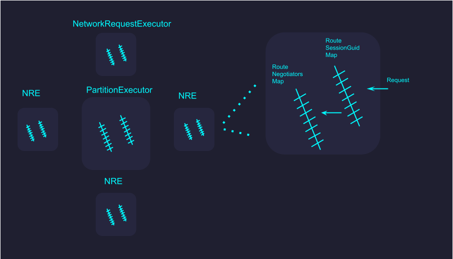

Architecture
PartitionExecutors
As a developer, you can define one or many. Each on is a foundational element. Each PartitionExecutor is a separate thread. Each can hold one or many NetworkRequestExecutors.
NetworkRequestExecutor
NetworkRequestExecutors wait to receive incoming requests. Each one holds a copy of a RouteSessionGuid Map and a RouteNegotiators Map. A request comes in, the session key is used to grab the route guid, then the corresponding RouteNegotiator which performs the actual request.
3:7
We found a configuration of 3/7 PartitionExecutors to NetworkRequestExecutor to be optimal. 300/700 the system can handle 10,000 concurrent requests.
©2023 Mike Croteau